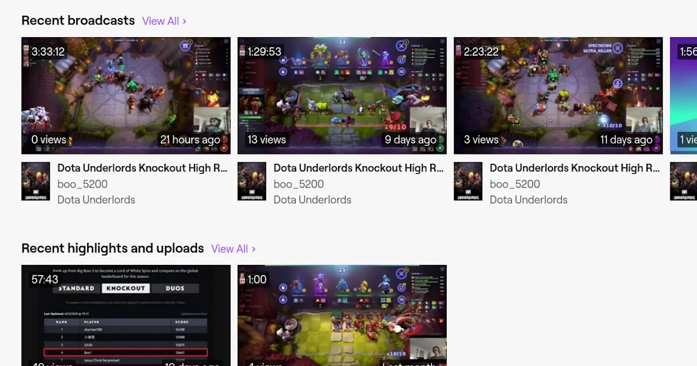

Dota Underlordsのホワイトスパイアの支配者は猿にでも到達可能である

ノックアウトモードにおいて最高ランクのホワイトスパイアの支配者に到達した。昨年の12月にこのモードが追加され、シーズン1が2月25日に始まった。5ヶ月が経過してようやくスタート地点に立つことができた。それもこれも、大ボスへとランクを上げるまで自己流でプレイしていたせいである。
ホワイトスパイアの支配者に到達することは誰にでも可能だ。なぜなら、上手い人間の動画を参考にしてプレイをする単純作業に過ぎないからである。真似をするだけで勝てるとなると大ボスで溢れかえるのではないかと思われるかもしれない。確かに、Dota Underlordsのプレイ動画はそれなりに再生数がある。しかし、自分よりも強いプレイヤーを参考にして真剣に学ぼうとする人間はひと握りだ。たとえば、Twitchの動画を探してまで見る人はほとんどいない。リーダーボードの上位をキープするドイツ人プレイヤーでも再生回数を見ると1桁だ。

Twitchの動画は直接見ずにyoutube-dlでダウンロードしている。YouTubeチャンネルに、設定をプライベートにして、アップロードする。いつでもどこでも手軽に見られることが大切である。
Dota Underlordsはドンジャラであるから他のプレイヤーの手に意識を向けることはない。たとえば、麻雀で他家の手を考慮しなければゼンツするだけの馬鹿である。オリという手段を行使できるゲームとは根本的に違う。戦術がないDota Underlordsは学習時に解説すら必要としない。したがって、勝ち続けているプレイヤーを真似ることで強くなることは必然である。ただし、漫然と見ていては記憶に残らない。動画を止めて麻雀の「何切る」のようにすべきだ。多少なりとも頭を働かせなければコピーすることはできない。
ポーカーと同様に短期的な結果を追うのはよくない。なぜなら、ダウンスイングで右往左往していては勝てないし、ランクを早く上げたいと願い闇雲にプレイするだけでは正しい決断を下すことができない。したがって、ポーカーの基本的な考え方を参考にすることはDota Underlordsにおいても有益である。
- ポーカーのさまざまな現実を理解し受け入れる
- 長期的視野でプレイする
- 金を儲けることよりも正しい決断を下すことを優先させる
- 金への執着を捨てる
- 自尊心を持ち込まない
- あらゆる感情を決断から排除する
- 分析と改善のサイクルを継続的に繰り返す
イアン・テイラー、マシュー・ヒルガー著、フジタカシ訳『賭けの考え方』パンローリング株式会社、2011年、p.131
とりわけ大事なのは6番の感情を排除することだ。ノックアウトモードは体力が4と、わずかしかないので焦ってしまうことが多々ある。それゆえに、精神的な問題がミスを誘発するのである。
感情はスターティングハンドの選択や、2番目に強いハンドを諦める能力に何の役にも立たない。感情はただ判断力を鈍らせ、あなたの注意を本来考えなくていいことに向けてしまうのだ。
イアン・テイラー、マシュー・ヒルガー著、フジタカシ訳『賭けの考え方』パンローリング株式会社、2011年、p.51

当たり前だが酒をあおりながらプレイするのはよくない。この大ボスのプレイヤーは試合が終了するごとにふらふらとした足取りで用を足していた。それゆえに、集中力が切れたようなプレイが散見された。

地道に練習をしていくと何を取るべきかが理解できるようになる。すなわち、強い構成が認識できるということだ。構成を見抜くことができる眼が最も重要であることは明らかである。なぜなら、リロールで出現する大量のごみをスルーすることができる「選球眼」を持つ人間が勝者だからだ。下手なプレイヤーにはこの眼がない。どのように組み合わせると強いのかを十分に理解していない。したがって、試合数を重ねるほどに他のプレイヤー、特にリーダーボードの上位、の養分と化すのである。